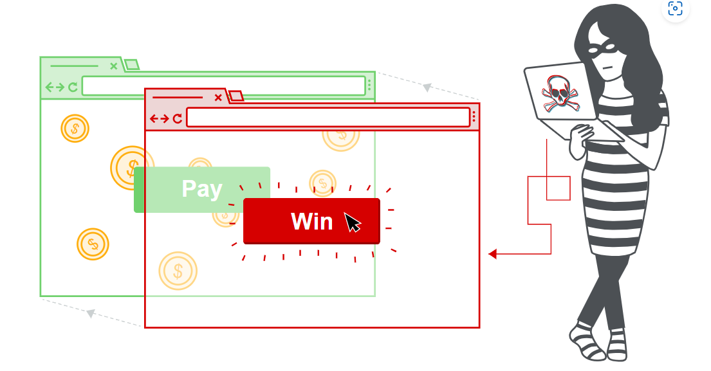

Clickjacking (UI redressing)
In this section we will explain what clickjacking is, describe common examples of clickjacking attacks and discuss how to protect against these attacks.
What is clickjacking?
Clickjacking is an interface-based attack in which a user is tricked into clicking on actionable content on a hidden website by clicking on some other content in a decoy website. Consider the following example:
A web user accesses a decoy website (perhaps this is a link provided by an email) and clicks on a button to win a prize. Unknowingly, they have been deceived by an attacker into pressing an alternative hidden button and this results in the payment of an account on another site. This is an example of a clickjacking attack. The technique depends upon the incorporation of an invisible, actionable web page (or multiple pages) containing a button or hidden link, say, within an iframe. The iframe is overlaid on top of the user’s anticipated decoy web page content. This attack differs from a CSRF attack in that the user is required to perform an action such as a button click whereas a CSRF attack depends upon forging an entire request without the user’s knowledge or input.

Protection against CSRF attacks is often provided by the use of a CSRF token: a session-specific, single-use number or nonce. Clickjacking attacks are not mitigated by the CSRF token as a target session is established with content loaded from an authentic website and with all requests happening on-domain. CSRF tokens are placed into requests and passed to the server as part of a normally behaved session. The difference compared to a normal user session is that the process occurs within a hidden iframe.
Labs
If you’re already familiar with the basic concepts behind clickjacking vulnerabilities and just want to practice exploiting them on some realistic, deliberately vulnerable targets, you can access all of the labs in this topic from the link below.
How to construct a basic clickjacking attack
Clickjacking attacks use CSS to create and manipulate layers. The attacker incorporates the target website as an iframe layer overlaid on the decoy website. An example using the style tag and parameters is as follows:
<head>
<style>
#target_website {
position:relative;
width:128px;
height:128px;
opacity:0.00001;
z-index:2;
}
#decoy_website {
position:absolute;
width:300px;
height:400px;
z-index:1;
}
</style>
</head>
...
<body>
<div id="decoy_website">
...decoy web content here...
</div>
<iframe id="target_website" src="https://vulnerable-website.com">
</iframe>
</body>
The target website iframe is positioned within the browser so that there is a precise overlap of the target action with the decoy website using appropriate width and height position values. Absolute and relative position values are used to ensure that the target website accurately overlaps the decoy regardless of screen size, browser type and platform. The z-index determines the stacking order of the iframe and website layers. The opacity value is defined as 0.0 (or close to 0.0) so that the iframe content is transparent to the user. Browser clickjacking protection might apply threshold-based iframe transparency detection (for example, Chrome version 76 includes this behavior but Firefox does not). The attacker selects opacity values so that the desired effect is achieved without triggering protection behaviors.
LAB
Basic clickjacking with CSRF token protection
Clickbandit
Although you can manually create a clickjacking proof of concept as described above, this can be fairly tedious and time-consuming in practice. When you’re testing for clickjacking in the wild, we recommend using Burp’s Clickbandit tool instead. This lets you use your browser to perform the desired actions on the frameable page, then creates an HTML file containing a suitable clickjacking overlay. You can use this to generate an interactive proof of concept in a matter of seconds, without having to write a single line of HTML or CSS.
Clickjacking with prefilled form input
Some websites that require form completion and submission permit prepopulation of form inputs using GET parameters prior to submission. Other websites might require text before form submission. As GET values form part of the URL then the target URL can be modified to incorporate values of the attacker’s choosing and the transparent “submit” button is overlaid on the decoy site as in the basic clickjacking example.
LAB
Clickjacking with form input data prefilled from a URL parameter
Frame busting scripts
Clickjacking attacks are possible whenever websites can be framed. Therefore, preventative techniques are based upon restricting the framing capability for websites. A common client-side protection enacted through the web browser is to use frame busting or frame breaking scripts. These can be implemented via proprietary browser JavaScript add-ons or extensions such as NoScript. Scripts are often crafted so that they perform some or all of the following behaviors:
check and enforce that the current application window is the main or top window,
make all frames visible,
prevent clicking on invisible frames,
intercept and flag potential clickjacking attacks to the user.
Frame busting techniques are often browser and platform specific and because of the flexibility of HTML they can usually be circumvented by attackers. As frame busters are JavaScript then the browser’s security settings may prevent their operation or indeed the browser might not even support JavaScript. An effective attacker workaround against frame busters is to use the HTML5 iframe sandbox attribute. When this is set with the allow-forms or allow-scripts values and the allow-top-navigation value is omitted then the frame buster script can be neutralized as the iframe cannot check whether or not it is the top window:
<iframe id="victim_website" src="https://victim-website.com" sandbox="allow-forms"></iframe>
Both the allow-forms and allow-scripts values permit the specified actions within the iframe but top-level navigation is disabled. This inhibits frame busting behaviors while allowing functionality within the targeted site.
LAB
APPRENTICEClickjacking with a frame buster script
Combining clickjacking with a DOM XSS attack
So far, we have looked at clickjacking as a self-contained attack. Historically, clickjacking has been used to perform behaviors such as boosting “likes” on a Facebook page. However, the true potency of clickjacking is revealed when it is used as a carrier for another attack such as a DOM XSS attack. Implementation of this combined attack is relatively straightforward assuming that the attacker has first identified the XSS exploit. The XSS exploit is then combined with the iframe target URL so that the user clicks on the button or link and consequently executes the DOM XSS attack.
LAB
Exploiting clickjacking vulnerability to trigger DOM-based XSS
Multistep clickjacking
Attacker manipulation of inputs to a target website may necessitate multiple actions. For example, an attacker might want to trick a user into buying something from a retail website so items need to be added to a shopping basket before the order is placed. These actions can be implemented by the attacker using multiple divisions or iframes. Such attacks require considerable precision and care from the attacker perspective if they are to be effective and stealthy.
LAB
How to prevent clickjacking attacks
We have discussed a commonly encountered browser-side prevention mechanism, namely frame busting scripts. However, we have seen that it is often straightforward for an attacker to circumvent these protections. Consequently, server driven protocols have been devised that constrain browser iframe usage and mitigate against clickjacking.
Clickjacking is a browser-side behavior and its success or otherwise depends upon browser functionality and conformity to prevailing web standards and best practice. Server-side protection against clickjacking is provided by defining and communicating constraints over the use of components such as iframes. However, implementation of protection depends upon browser compliance and enforcement of these constraints. Two mechanisms for server-side clickjacking protection are X-Frame-Options and Content Security Policy.
Read more
X-Frame-Options
X-Frame-Options was originally introduced as an unofficial response header in Internet Explorer 8 and it was rapidly adopted within other browsers. The header provides the website owner with control over the use of iframes or objects so that inclusion of a web page within a frame can be prohibited with the deny directive:
X-Frame-Options: deny
Alternatively, framing can be restricted to the same origin as the website using the sameorigin directive
X-Frame-Options: sameorigin
or to a named website using the allow-from directive:
X-Frame-Options: allow-from https://normal-website.com
X-Frame-Options is not implemented consistently across browsers (the allow-from directive is not supported in Chrome version 76 or Safari 12 for example). However, when properly applied in conjunction with Content Security Policy as part of a multi-layer defense strategy it can provide effective protection against clickjacking attacks.
Content Security Policy (CSP)
Content Security Policy (CSP) is a detection and prevention mechanism that provides mitigation against attacks such as XSS and clickjacking. CSP is usually implemented in the web server as a return header of the form:
Content-Security-Policy: policy
where policy is a string of policy directives separated by semicolons. The CSP provides the client browser with information about permitted sources of web resources that the browser can apply to the detection and interception of malicious behaviors.
The recommended clickjacking protection is to incorporate the frame-ancestors directive in the application’s Content Security Policy. The frame-ancestors 'none' directive is similar in behavior to the X-Frame-Options deny directive. The frame-ancestors 'self' directive is broadly equivalent to the X-Frame-Options sameorigin directive. The following CSP whitelists frames to the same domain only:
Content-Security-Policy: frame-ancestors 'self';
Alternatively, framing can be restricted to named sites:
Content-Security-Policy: frame-ancestors normal-website.com;
To be effective against clickjacking and XSS, CSPs need careful development, implementation and testing and should be used as part of a multi-layer defense strategy.
Read more